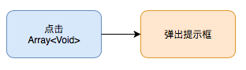
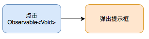

函数式编程 -> 函数响应式编程
现在大家已经了解我们是如何运用函数式编程来操作序列的。其实我们可以把这种操作序列的方式在升华一下。例如，你可以把一个按钮的点击事件看作是一个序列：

// 假设用户在进入页面到离开页面期间，总共点击按钮 3 次
// 按钮点击序列
let taps: Array<Void> = [(), (), ()]
// 每次点击后弹出提示框
taps.forEach { showAlert() }
这样处理点击事件是非常理想的，但是问题是这个序列里面的元素（点击事件）是异步产生的，传统序列是无法描叙这种元素异步产生的情况。为了解决这个问题，于是就产生了可被监听的序列Observable<Element>。它也是一个序列，只不过这个序列里面的元素可以是同步产生的，也可以是异步产生的:

// 按钮点击序列
let taps: Observable<Void> = button.rx.tap.asObservable()
// 每次点击后弹出提示框
taps.subscribe(onNext: { showAlert() })
这里 taps 就是按钮点击事件的序列。然后我们通过弹出提示框，来对每一次点击事件做出响应。这种编程方式叫做响应式编程。我们结合函数式编程以及响应式编程就得到了函数响应式编程：

passwordOutlet.rx.text.orEmpty
.map { $0.characters.count >= minimalPasswordLength }
.bind(to: passwordValidOutlet.rx.isHidden)
.disposed(by: disposeBag)
我们通过不同的构建函数，来创建所需要的数据序列。最后通过适当的方式来响应这个序列。这就是函数响应式编程。